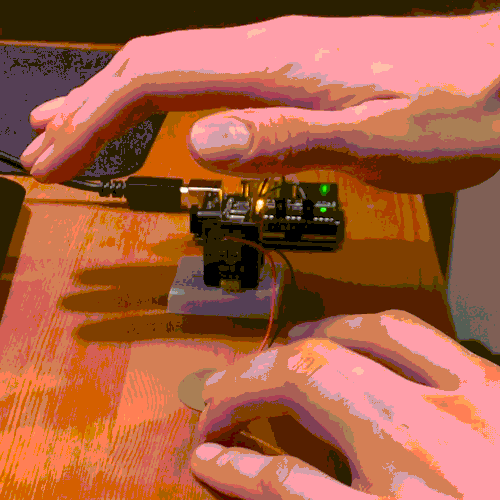
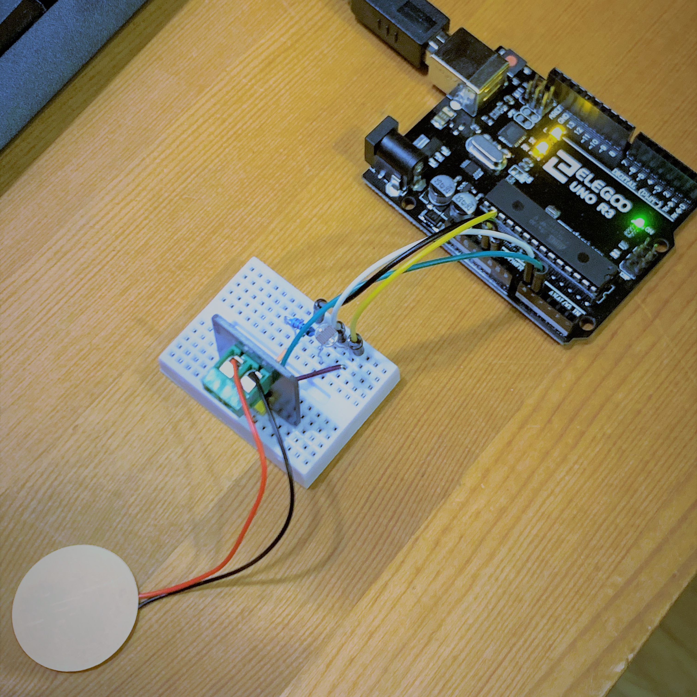
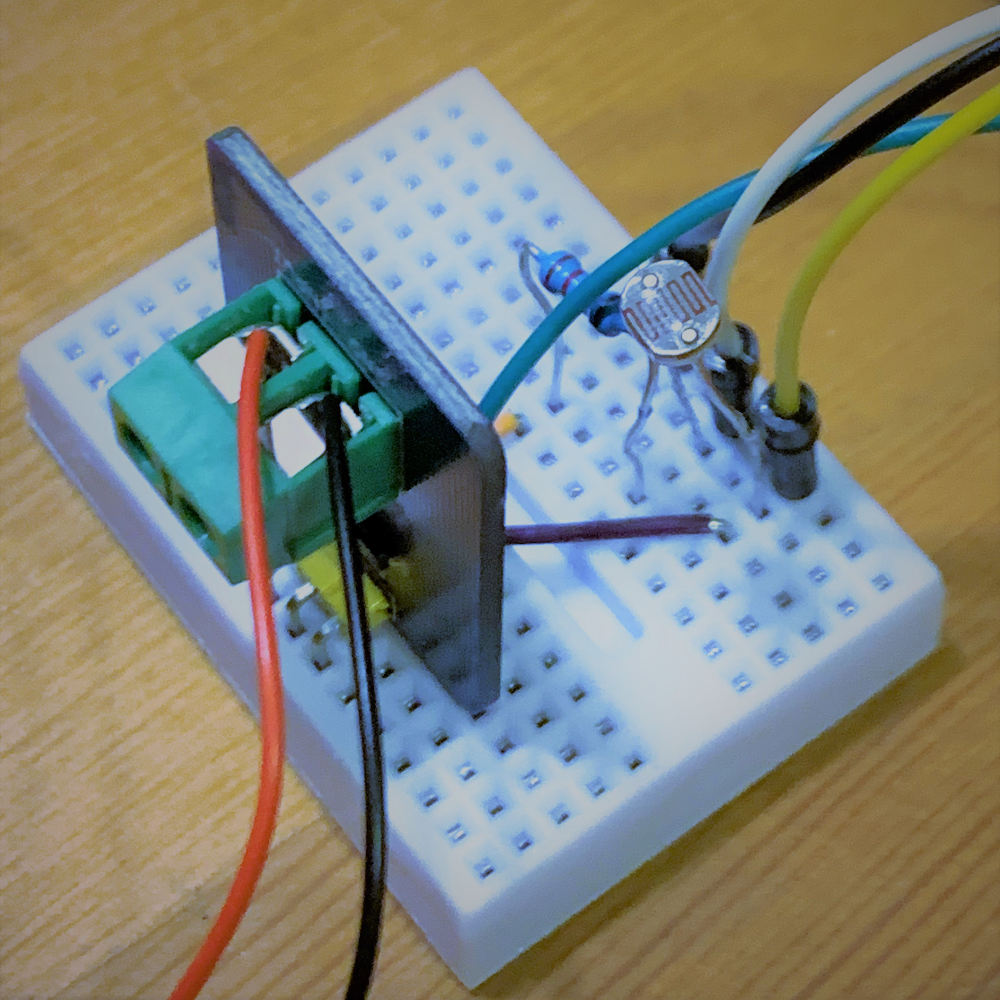
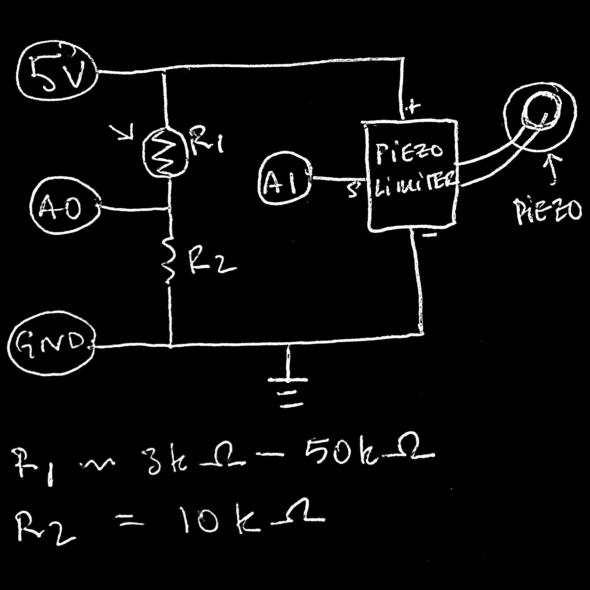
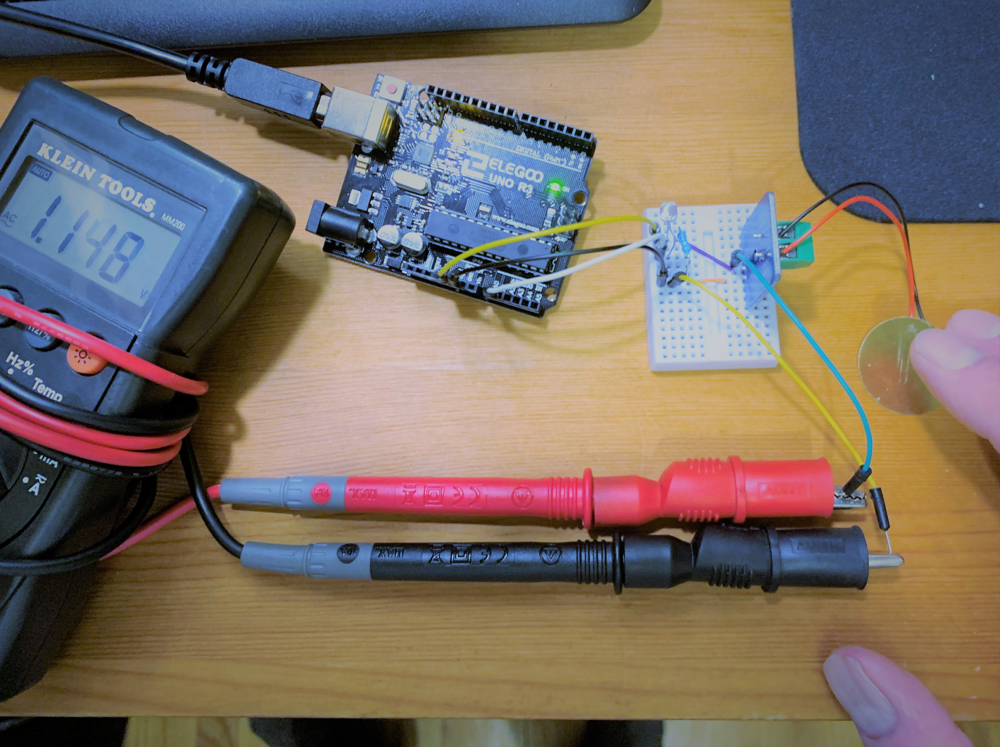

We are now like Johnny Mnemonic!
Using a p5serial connection, we are able to communicate with a p5 (processing) javascript embedded into an .html, making interwebs magic real. The concept is to have a lovely synaesthetic experience by controlling some geometry using a piezo element and a photo resistor realized as an edgy cyber-theramin. Audio implementation would bring this to the next level. The piezo element shows some pressure sensitivity but is mostly a test for percussive control.
Unfiltered piezo elements can produce suprisingly high voltage spikes, which would surely make our arduino unhappy. Fortunately HiLetgo and several other manufactures produce simple voltage limiters for piezos specifically designed to interface with microcontrollers. The exact schematic is unknown due to lack of datasheet, but there are only 2 visible components, which one reviewer claims are a 1M resistor and a zener diode, which should do the trick. Just to be safe, the signal out was checked with multi-meter. The device did indeed limit the voltage - no higher than 1.5V was seen.
The photoresitor for the theremin provided ~3k Ohm of resistance at ambient light and over ~50k Ohm when completely covered. A 10k Ohm resistor was chosen for the voltage divider here, giving the analogRead an input range of ~1.15 - 4.17V based on the voltage divider equation V_out = V_in * (R_photo / R_total).
The piezo being limited to a lower voltage provided less resolution for that analogRead value, but it was intended to be more of a trigger than anything. After using the serial connection to first determine the analogRead values for each sensor, the values were mapped over to appropriate ranges for the p5 program.
******************************** ARDUINO CODE *****************************
int trig; // var for the piezo
void setup()
{
Serial.begin(9600);
}
void loop() {
/* // these lines were used for calibration
Serial.print("photores:");
Serial.println(analogRead(A0));
Serial.print("piezo:");
Serial.println(analogRead(A1));
*/
// update trig value each loop and contantly send the value from the photoresistor.
// the voltage divider setup provided a good range (100-750). 1000
// is added to this number for easy filtering. see p5js code.
trig = analogRead(A1);
Serial.println(analogRead(A0)+1000);
if (trig > 5) // detect a tap / pressure. 5 used to reduce sensitivity.
{
Serial.println(trig);
}
delay(100); // delay necessary for p5serial happiness
}
******************************** P5 CODE ***********************************
var serial; // variable to hold an instance of the serialport library *from template*
var portName = 'COM10' // COM10 for talking to ardy
var signal; // variable for serial receipt
var shade; // variable for controlling shade of shapes
var rate; // variable for controlling framerate
function setup() {
serial = new p5.SerialPort(); // make a new instance of the serialport library *from template*
serial.on('list', printList); // set a callback function for the serialport list event **
serial.on('connected', serverConnected); // callback for connecting to the server **
serial.on('open', portOpen); // callback for the port opening **
serial.on('data', serialEvent); // callback for when new data arrives **
serial.on('error', serialError); // callback for errors **
serial.on('close', portClose); // callback for the port closing **
serial.list(); // list the serial ports **
serial.open(portName); // open a serial port **
createCanvas(800, 800); // set up your canvas size
background(0); // initialize canvas as black
shade = 15; // initialize shade value as dark grey
}
// get the list of ports: *from template*
function printList(portList) {
// portList is an array of serial port names
for (var i = 0; i < portList.length; i++) {
// Display the list the console:
print(i + " " + portList[i]);
}
}
// the following messages will print to browser console and are useful for debugging
function serverConnected() { // *from template*
print('connected to server.');
}
function portOpen() { // *from template*
print('the serial port opened.')
}
function serialError(err) { // *from template*
print('Something went wrong with the serial port. ' + err);
}
function portClose() { // *from template*
print('The serial port closed.');
}
function serialEvent() {
if (serial.available()) {
signal = Number(serial.readLine()); // reading from buffer and saving values to 'signal' var
}
}
function draw() { // this loops super quick and forever like the loop in ard code
background(0); // this clears the screen between each draw preventing shape stack up
// the analog signal coming from the piezo is filtered using this if
// statement, the desired shade range of 15-255 is met by mapping the
// analogRead range generated by the piezo (determined empirically)
if (signal < 1000 && signal > 0) {
shade = map(signal, 0, 150, 15, 255, true);
}
// similar as above. the analogRead coming from the photoresistor voltage-divider
// has 1000 added to it before sending over serial for easy parsing. the if statement
// filters the signal, and it is then attentuated to 0-25 frames using map
if (signal > 1000) {
rate = int(map(signal, 1100, 1750, 0, 25));
}
frameRate(rate); // update the frame rate
fill(shade); // fill will act on the shape generated below using the shade value from piezo
beginShape(); // who doesn't like random geometry? this builds a shape by specifying a set of vertices
vertex(random(100, 700), random(100, 700));
vertex(random(100, 700), random(100, 700));
vertex(random(100, 700), random(100, 700));
vertex(random(100, 700), random(100, 700));
vertex(random(100, 700), random(100, 700));
vertex(random(100, 700), random(100, 700));
endShape(CLOSE);
// get weird with it!
}